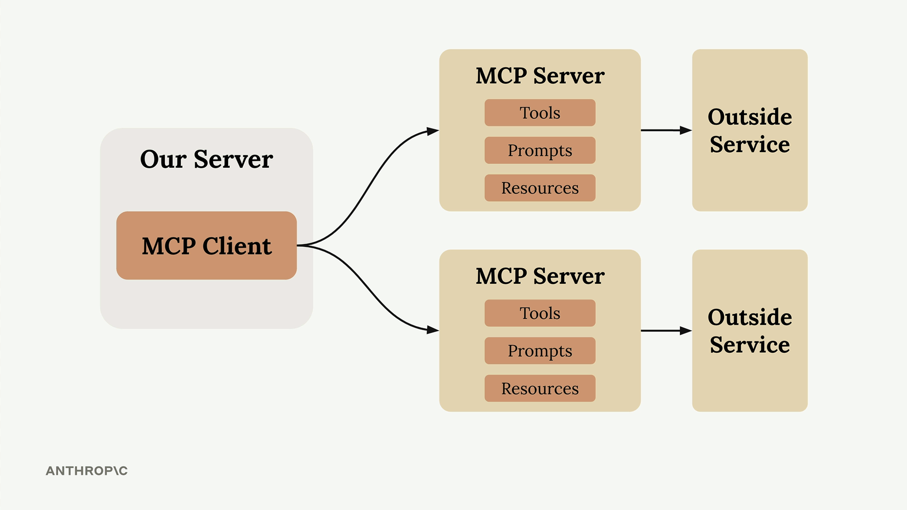
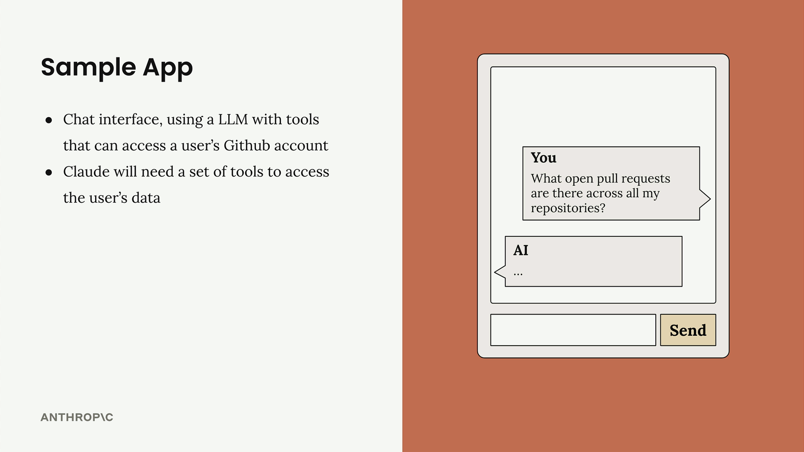
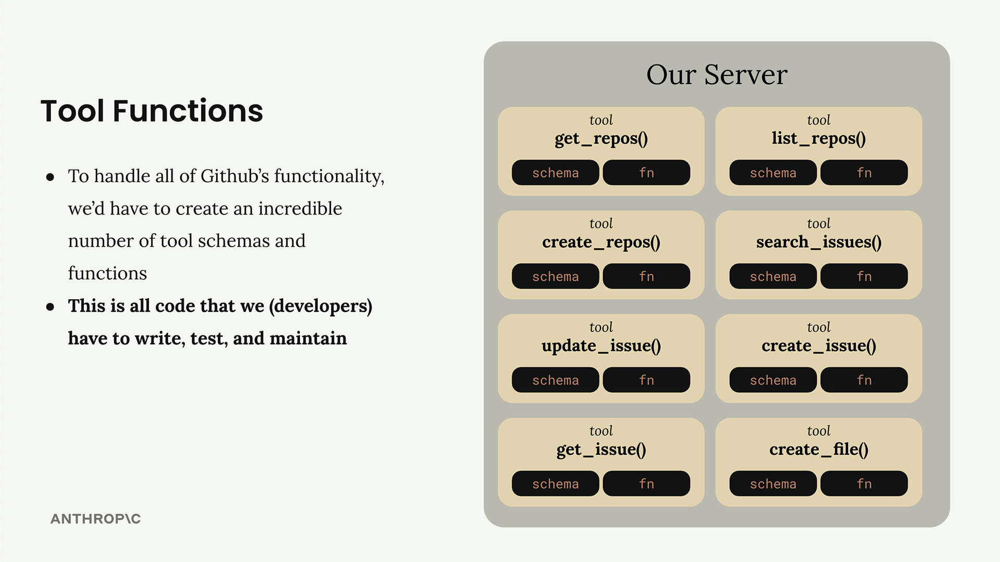
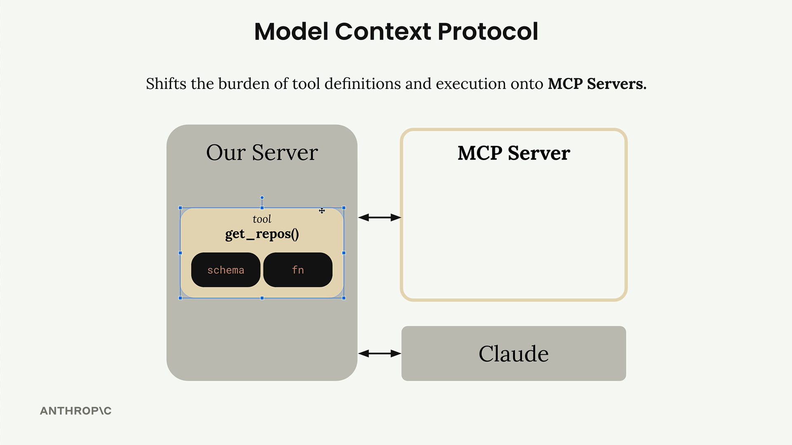
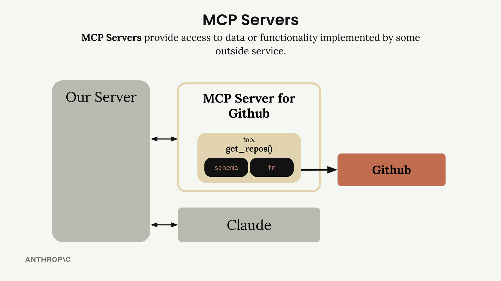

Введение в MCP
Чему научитесь
Видео 4:40 и текст урока
К концу урока вы сможете:
- объяснить, что такое Model Context Protocol и какую проблему он решает;
- описать, как MCP перекладывает описание и выполнение инструментов на MCP-серверы;
- ответить на частые вопросы: кто пишет MCP-серверы, чем MCP отличается от прямого вызова API и от tool use.
Видео и текст урока.
Смотреть урок на Skilljar Introducing MCP · 4:40Model Context Protocol (MCP) — коммуникационный слой, который даёт Claude контекст и инструменты и избавляет вас от написания массы рутинного интеграционного кода. Можно считать его способом переложить описание и выполнение инструментов с вашего сервера на специализированные MCP-серверы.

Впервые знакомясь с MCP, вы увидите схемы базовой архитектуры: MCP-клиент (ваш сервер) подключается к MCP-серверам, которые содержат инструменты (tools), промпты (prompts) и ресурсы (resources). Каждый MCP-сервер служит интерфейсом к какому-то внешнему сервису.
Какую проблему решает MCP
Допустим, вы делаете чат, в котором пользователи могут спрашивать Claude о своих данных на GitHub. Пользователь может спросить: «Какие pull request’ы открыты во всех моих репозиториях?» Чтобы ответить, Claude нужны инструменты для доступа к API GitHub.

Функциональность GitHub огромна: репозитории, pull request’ы, issues, проекты и многое другое. Без MCP вам пришлось бы написать невероятное количество схем и функций инструментов, чтобы охватить все возможности GitHub.

Значит, весь этот интеграционный код вам придётся писать, тестировать и поддерживать самим. Это много работы и постоянное бремя сопровождения.
Как работает MCP
MCP снимает с вас это бремя: описание и выполнение инструментов переезжают с вашего сервера на отдельные MCP-серверы. Вместо того чтобы вы сами писали все эти инструменты GitHub, этим занимается MCP-сервер для GitHub.

MCP-сервер упаковывает множество возможностей GitHub и предоставляет их в виде стандартизированного набора инструментов. Ваше приложение подключается к этому MCP-серверу, а не реализует всё с нуля.
Что такое MCP-серверы
MCP-серверы дают доступ к данным или функциональности, которые реализованы внешними сервисами. Это специализированные интерфейсы, которые стандартным образом предоставляют инструменты, промпты и ресурсы.

get_repos теперь живёт в MCP-сервере для GitHub.В нашем примере MCP-сервер для GitHub содержит инструменты вроде get_repos() и обращается напрямую к API GitHub. Ваш сервер общается с MCP-сервером, а тот берёт на себя все детали реализации, специфичные для GitHub.
Частые вопросы
Кто пишет MCP-серверы?
Создать реализацию MCP-сервера может кто угодно. Часто сами поставщики сервисов выпускают свои официальные MCP-серверы. Например, AWS может выпустить официальный MCP-сервер с инструментами для разных своих сервисов.
Чем это отличается от прямого вызова API?
MCP-серверы дают уже готовые схемы и функции инструментов. Если вы хотите вызывать API напрямую, описания инструментов придётся писать самим. MCP избавляет вас от этой работы по реализации.
Разве MCP — не то же самое, что tool use?
Это распространённое заблуждение. MCP-серверы и tool use дополняют друг друга, но это разные понятия. MCP-серверы дают уже готовые схемы и функции инструментов, а tool use отвечает за то, как Claude эти инструменты на самом деле вызывает. Главное различие в том, кто делает работу: с MCP инструменты за вас уже реализовал кто-то другой.
Выгода очевидна: вместо того чтобы самим поддерживать сложный набор интеграций, вы можете опереться на MCP-серверы, которые берут на себя основную работу по подключению к внешним сервисам.
Дальше
Следующий урок — «MCP-клиенты»: как клиент связывает ваш сервер с MCP-серверами и какими сообщениями они обмениваются.
Оригинал урока: Introducing MCP.